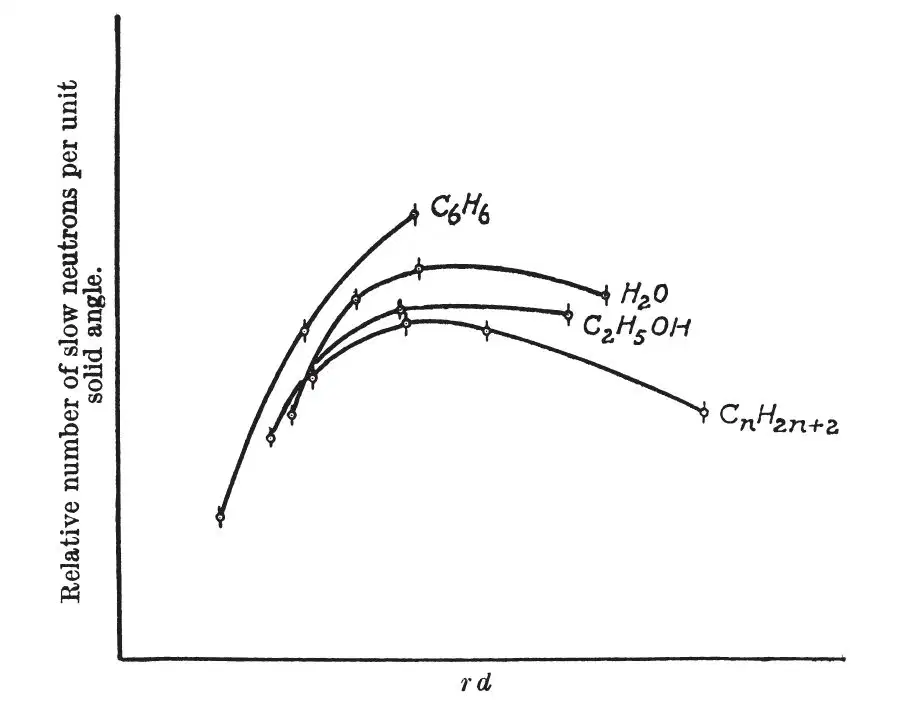

中文
中文H. von Halban, Jr. and P. Preiswerk
Editor’s Note
Fermi had recently shown that neutrons passing through substances containing hydrogen would be slowed by collisions with protons. Here Hans von Halban and Peter Preiswerk explore the process in detail. They note that neutrons of relatively low energy might well be slowed as they transfer energy to the molecules of the medium, in which case the slowing might be influenced by the molecular nature of the medium. So they passed neutrons through water, ethyl alcohol, benzene and liquid paraffin, measuring how the intensity of slow neutrons depended on distance travelled. The results showed that indeed the degree of slowing seemed likely to reflect differences in molecular motions. Slowing of neutrons was later to prove essential for controlled nuclear fission. 中文
FERMI and others1 showed that neutrons, passing through substances containing hydrogen, loose their energy by collisions with protons. It is of interest to discuss this process of slowing down somewhat further. So long as the energy of the neutron is higher than the energy with which the protons are bound in the molecules of the substance through which the neutrons pass, it seems evident that the latter give, on the average, half their energy to the proton at every collision. But when the neutrons are slowed down below this binding energy, they must excite rotation and oscillation of the hydrogen atom in the molecule in order to lose energy. 中文
It is not certain whether the cross-section of protons for neutrons is a uniform function of the velocity of the neutrons, or if it shows discontinuities for energies comparable with the molecular bindings. In the latter case, it is possible that two substances, containing hydrogen held by different linkages, would show differences in slowing down the neutrons. We have carried out some experiments which indicate the existence of such differences. 中文
Spheres with different radii (5–15cm.) were alternately filled with water (0.11 gm. H/cm.3), ethyl alcohol (0.10 gm. H/cm.3), benzene (0.067 gm. H/cm.3) and a liquid paraffin (0.14 gm. H/cm.3). In the centre of the sphere a neutron source (radon + beryllium) was placed. The activation of a silver plate, which was fixed on the surface of the spheres and exposed for five minutes to irradiation, served as a measure of the intensity of slow neutrons. 中文
Fig. 1 shows the number of slow neutrons per unit of the solid angle plotted against rd, where r is the radius of the sphere and d the quantity of hydrogen contained by 1 cm.3 of the liquid in question. The general aspect of these curves is already known. For small radii a rapid increase of the intensity with increasing radius is observed, due to the slowing down of neutrons by collisions with protons. After a certain point, an increase of the radius causes a reduction of the intensity. This clearly shows that not all neutrons which pass the surface of a sphere are reaching the next bigger sphere. The vanishing of slow neutrons must be ascribed to absorption. 中文

Fig. 1 中文
The absorption of slow neutrons by paraffin and other substances containing hydrogen has been studied in detail by Bjerge and Westcott2, who found that the number of slow neutrons is reduced to a half after diffusion through 1.6 cm. of water. By a different method we obtained the value of 2.5 cm. for paraffin in a preliminary experiment. A source of neutrons was placed in the centre of a paraffin wax cube of 14 cm. side. Five plates of paraffin wax, each 1 cm. thick, and finally a small silver plate were placed upon this cube. A screen of cadmium was interposed between the paraffin plates at different distances from the silver plate. The activity of the silver, obtained for equal times of irradiation, increased when the distance between the silver and the cadmium was increased. A curve was obtained which showed that influence of the absorption of the cadmium decreased to a half when the distance between the silver plate and the absorber was increased by 2.5 cm. 中文
Fig. 1 shows that the maximum values of intensity are different for different liquids; these differences cannot be ascribed to the quantities of hydrogen contained by the liquids alone. Also, it is not possible to explain these results by absorption of slow neutrons by oxygen or carbon nuclei. A neutron has, for the same number of collisions with protons, passed twice the number of carbon atoms in benzene as in the liquid paraffin, and we see that the maximum value for the latter is much lower than for benzene, where the maximum seems to be just reached with the biggest sphere. 中文
The differences in the influence of the four liquids examined, on the intensity of slow neutrons, cannot be ascribed to differences in the quantities of hydrogen, carbon or oxygen these liquids contain. Other differences between these liquids depend upon their molecular structure. Thus different probabilities for the slowing down of neutrons by excitation of rotation and oscillation of the hydrogen atoms in the different molecules may account for the discrepancies observed. 中文
(136, 951-952; 1935)
Hans von Halban, Jr. and Peter Preiswerk: Institut du Radium, Laboratoire Curie, Paris, Nov. 5.
References:
1. Fermi and others, La Ricerca Scientifica, (v) 2, 1; 1934. (vi) 1, 1; 1935.
2. T. Bjerge and C. H. Westcott, Proc. Roy. Soc., A, 150, 709; 1935.